Course: Personal Training Certification
Topic: Cardio Regulations, part 1 of 2
About these notes: Detailed notes from the Cardio Regulations 1 lecture, written so the whole lecture can be studied without watching the recording. Every concept, example, analogy and class question is covered. For a short revision version see the Study Notes. The second part, Cardio Regulations 2, covers intensity, target heart rate, monitoring and training methods.
Abbreviations used in these notes
| Short form | Meaning |
|---|---|
| CR endurance | Cardiorespiratory endurance |
| ME | Muscular endurance |
| WBIB | Weight-bearing, impact-based (aerobic activities) |
| WBNIB | Weight-bearing, non-impact-based |
| NWBNIB | Non-weight-bearing, non-impact-based |
| RA / RV | Right atrium / right ventricle |
| LA / LV | Left atrium / left ventricle |
| SVC / IVC | Superior vena cava / inferior vena cava |
| B / M / S | Biggest / medium / smallest member of the artery or vein family (as written on the board) |
| HR | Heart rate (beats per minute, bpm) |
| RHR | Resting heart rate |
| MHR | Maximum heart rate |
| HRR | Heart rate reserve |
| SV | Stroke volume |
| Q | Cardiac output |
| VO2 | Volume of oxygen consumed by the body to produce energy |
| VO2 rest / VO2 max | VO2 at rest / maximum VO2 (maximum aerobic capacity) |
| MET | Metabolic equivalent of task |
| RBC | Red blood cells |
| ATP | Adenosine triphosphate (usable energy) |
| CV / R system | Cardiovascular / respiratory system |
| P / S | Pulmonary circulation / systemic circulation |
| T old / T new, S old / S new | Time and speed before and after a change in workload |
Before this lecture
This is the first lecture of the last block of the course (cardio, fitness testing and scheduling, two lectures each). Because there was a long gap since the earlier topics, a good part of this lecture is a revision of ideas that are applied in the cardio lectures. You should already be familiar with: the five components of fitness, body composition and fat loss, the aerobic energy system (ATP, mitochondria), synovial joint types, the load-bearing joints of the legs, the heart, circulatory and respiratory systems, and workload from the weight training lectures.
Outline of the lecture
| Part | Topic |
|---|---|
| 1 | What cardio is and why it is done (building endurance) |
| 2 | Endurance revisited: cardiorespiratory versus muscular endurance (who, what, how) |
| 3 | Comprehensive muscular endurance and aerobic cross training (with three benefits) |
| 4 | Classification of aerobic activities based on joint stress (WBIB, WBNIB, NWBNIB) |
| 5 | Blood circulation: revision (walk-along diagram) |
| 6 | Key terminologies: HR, RHR, MHR, HRR, SV, Q, acute response, VO2 rest and VO2 max |
| 7 | Workload in cardio (distance, speed, time) and a case study |
| 8 | Chronic adaptations to cardio (cardiovascular and respiratory systems) |
| 9 | Class questions and what comes next |
Part 1: What Cardio Is and Why It Is Done
1.1 Why do people do cardio?
The lecture opened with a question to the class: who does cardio, and which activities? The answers were jogging, treadmill, walking and cycling. These are classic cardio activities.
The next question was why people do cardio, first from a layman's point of view. The common public association is weight loss or fat loss. The body composition lectures showed that fat loss is not the outcome of any single training type or activity by itself. Without a well-balanced nutrition plan designed for fat loss, no training type produces it. Cardio and weight training can facilitate the process, but they should not be seen as the tools that remove fat.
From the course point of view, a student's answer was correct: cardio is mainly about stamina, which is the same as endurance.
1.2 Where the word comes from
The word cardio comes from the Greek word cardium, which means heart. It appears in related words such as cardiology (the field of medicine that specialises in the heart) and cardiologist (a doctor who specialises in heart-related functions).
So cardio training means training the heart for a purpose, and that purpose is to build endurance. If anyone asks for the main benefit of cardio, the answer is building endurance.
Two of the five components of fitness are about endurance: cardiorespiratory endurance and muscular endurance. The next part revises both.
Part 2: Endurance Revisited
2.1 Decoding the word "endurance"
Rather than learning the textbook definition, it is easier to take the word apart.
Endurance (also called stamina) is the ability of someone (who?) to do something (what?) for a long duration without getting fatigued.
To get the meaning of each type of endurance, answer three questions: WHO is the someone, WHAT is the something, and HOW can it be improved.

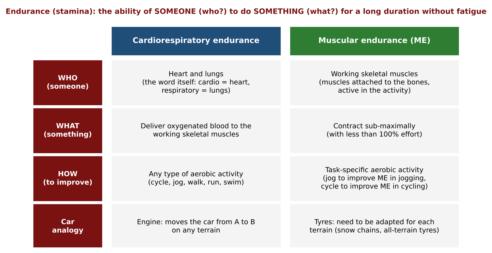
2.2 Cardiorespiratory (CR) endurance
- Who: the heart and lungs. The answer is hidden in the name: cardio means heart, respiratory means lungs.
- What: to deliver oxygenated blood to the working skeletal muscles (supply, deliver or transport all mean the same here).
- How: doing any type of aerobic activity (cycle, jog, walk, run, swim).
Definition. Cardiorespiratory endurance is the ability of the heart and lungs to deliver oxygenated blood to the working skeletal muscles for a long duration without getting fatigued.
Skeletal muscles are the muscles connected to the bones (to the skeletal system). Working skeletal muscles are the ones actively working in the activity. In jogging these are mainly the muscles of the legs. The heart and lungs are responsible for delivering oxygenated blood to them so they can sustain the activity, and the heart and lungs themselves should not get tired. If the heart and lungs start tiring during this task, the person needs to work on their cardiorespiratory endurance.
Why aerobic activity is the tool. The word aerobic means "in the presence of oxygen". In the aerobic energy system, ATP is produced in the presence of oxygen. The mitochondria, the powerhouse of the cell, use oxygen and convert it into usable energy (ATP).
Aerobic activities (cycling, jogging, walking, running, swimming and so on) are those that can be done for more than 3 minutes non-stop. Doing them creates a continuous demand for more and more oxygen. When the demand is created, the heart and lungs get better and better at supplying it. It works like supply and demand: if the demand is never created, the supply has no reason to improve. This is why aerobic activity prepares the heart and lungs to do the job for a longer period, gradually.
2.3 Muscular endurance (ME)
- Who: the working skeletal muscles (again hidden in the name).
- What: to contract sub-maximally. A muscle can contract maximally or sub-maximally. Maximally means applying 100% of its effort. The prefix sub means under or less, so sub-maximally means contracting with less than 100% effort.
- How: doing task-specific aerobic activity.
Definition. Muscular endurance is the ability of the working skeletal muscles to contract sub-maximally for a long duration, for a particular task, without getting fatigued.
Why it is task specific. The same leg muscles contract in jogging and in cycling, but the movement pattern is different (jogging and cycling are different cyclical patterns). If muscles are trained all year to contract sub-maximally in the jogging pattern, they cannot be expected to perform equally well in a cycling tournament at the end of the year. So:
- to improve ME for jogging, jog;
- to improve ME for cycling, cycle;
- to improve ME for swimming, swim.
(The board wrote this as "jog for ME in jogging" and "cycle for ME in cycling".)
Example from sport. Usain Bolt cannot swim as well as Michael Phelps, and Michael Phelps cannot run as fast as Usain Bolt. They are masters of their own field because their muscles have very good endurance related to their domain, not to another domain. Both athletes have heart and lungs trained very well (both do cardio), so both have top-notch cardiorespiratory endurance. Their muscular endurance is good only in a specific field.
2.4 The car analogy
Compare a car's engine to the human heart and lungs.
- The engine has one job: give the power to move the car from point A to point B, whatever the terrain (desert, off-road, snow, hilly road or normal concrete road). In the same way, the heart and lungs do the same job whatever the activity (swim, cycle, run or anything else).
- The tyres cannot be the same for all terrains. A normal city car needs modification, for example chains wrapped around the tyres for snow, or an all-terrain vehicle. Tyres are compared to the muscles: the heart and lungs supply oxygenated blood for any activity, but the muscles must be adapted and trained differently for each different activity.
That is the difference between the two types of endurance. Cardio training helps build both.
| Cardiorespiratory endurance | Muscular endurance | |
|---|---|---|
| Who | Heart and lungs | Working skeletal muscles |
| What | Deliver oxygenated blood to the working skeletal muscles | Contract sub-maximally (less than 100% effort) |
| How | Any type of aerobic activity | Task-specific aerobic activity (jog to improve jogging, cycle to improve cycling) |
| Specific to a task? | No, works for any activity | Yes |
| Car analogy | Engine | Tyres |
Part 3: Comprehensive Muscular Endurance and Aerobic Cross Training
3.1 Task-specific muscular endurance: who needs it?
Everything in Part 2 about ME was task-specific muscular endurance. It is meaningful for people whose day-to-day life engages their muscles in the same particular movement pattern. Examples from the lecture:
- A cricket batsman perfecting one shot. A well-known batsman said in interviews that he became so good in a particular shot because during net practice he played that same shot for hours every day (the lecture quoted at least 90 overs daily). The muscles move in one pattern, and the task-specific endurance for that pattern gets better and better.
- A tennis player practising a forehand or backhand in rehearsals.
- A carpenter cutting wood with precision using a tool, with the muscles moving in the same way for a long duration through the shift.
- A junior chef in an Indian restaurant rolling out chapatis day after day, with the muscles moving in the same pattern.
3.2 Most clients need comprehensive muscular endurance
Most future clients belong to a general lifestyle category. Their daily life does not involve the muscles moving in the same pattern for long periods. Examples: a homemaker, someone who runs a business, a student, a corporate employee.
A typical day for such a person: wake up, morning activities, leave for work, school or a factory, meetings or lectures, office work, lunch, more work, perhaps a sport or a run now and then, a workout once, twice or thrice a week, back home for the evening routine, dinner with friends and family, entertainment (almost all indoors nowadays), and then the day ends. Through this routine the muscles do not move in one pattern for long durations.
For such clients the aim is not task-specific ME. The aim is a muscular endurance that is complete and overall, not specific to one task. This is comprehensive muscular endurance, a "360 degree", holistic muscular endurance.
3.3 Aerobic cross training: the technique
The simple and now quite popular technique to build comprehensive ME is aerobic cross training.
Meaning. Cross training means doing multiple activities and not sticking to one. Athletes do it a lot. The goal is to reap the benefits of many different activities, and so get better in the main activity or sport. When the word aerobic is added, it means doing multiple aerobic activities, not just one.
Student question: Is cross training the same as functional training?
Answer: Cross training can be of different types. The lecture sticks to purely aerobic cross training. Functional training (and activities such as HYROX) has a mix of anaerobic and aerobic work (for example sled push), and many of its elements cannot be done for more than 3 minutes non-stop. Adding weights takes it into the anaerobic zone. Here, no weights are included. The cardio lectures stay in the purely aerobic zone.
Examples of cross training in sport.
- Cricketers post videos of sprinting and weightlifting. Some people dismiss this as a publicity stunt or time pass, but it is cross training. Sprinting is why a veteran batsman can still run the fastest between the wickets and save boundaries across the field (another senior player is also one of the oldest but still the fastest). Weightlifting builds the strength to generate power so the ball goes across the boundary.
- Swimming and rowing use similar muscle movement patterns, so many swimmers work on movement patterns in the gym (for example on a rowing machine) in their off-pool time.
(Rowing here means the aerobic rowing machine, a cardio machine, not the seated row exercise.)
3.4 Two ways to apply aerobic cross training

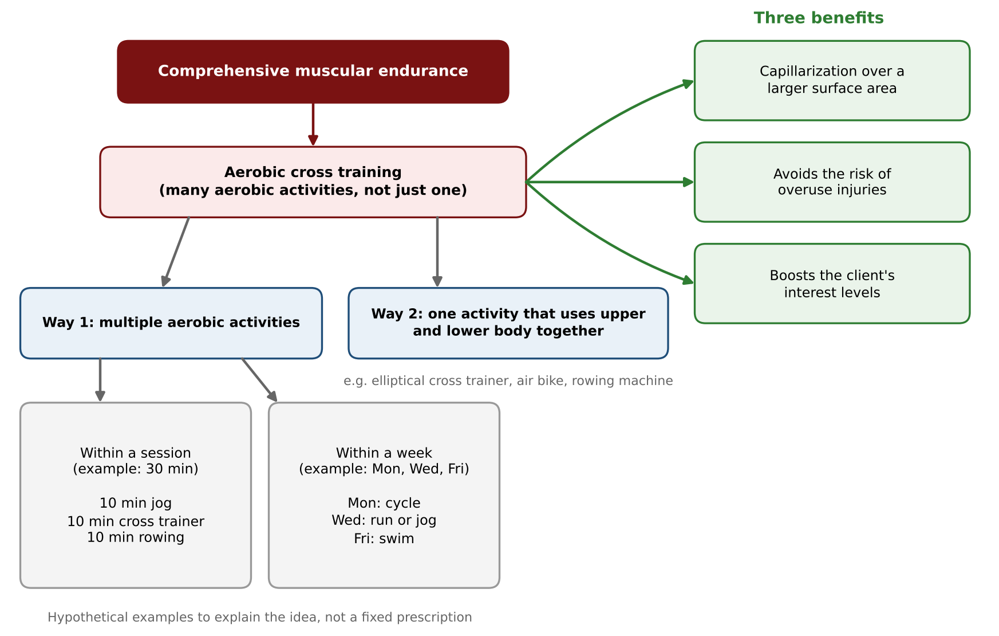
Way 1: Do multiple aerobic activities. This can be applied within a session or within a week. The numbers below are hypothetical examples to explain the concept, not a prescription.
- Within a week. Suppose three cardio sessions are set on Monday, Wednesday and Friday. Cycling on Monday (outdoor), a run or jog on Wednesday (on a treadmill, or an indoor change if cycling was outdoors), and a swim on Friday. The client does multiple activities in the week and does not stick to one.
- Within a session. Split the time. For a 30 minute session: a 10 minute jog, then 10 minutes on the cross trainer, then 10 minutes of rowing.
Way 2: Do an activity that involves both the upper and lower body at the same time. Staying with the same activity is fine if that activity uses both. The machine that does this is called the cross trainer for this very reason (the elliptical cross trainer). It has two pedals connected to two handles: the hands and the legs move together.
Aerobic cross training, apart from building comprehensive ME, also gives all the chronic adaptations of cardio (long-term benefits, listed in Part 8). Sticking to one cardio activity gives those adaptations, and doing multiple activities still gives them.
3.5 Three benefits of aerobic cross training
These are the benefits that explain how cross training builds comprehensive ME.
Benefit 1: Capillarization over a larger surface area
Capillaries are the tiniest blood vessels. They deal directly with the cells (they wrap around the trillions of cells in the body), and the exchange of oxygen and carbon dioxide happens there. One benefit of cardio is neocapillarization (new capillaries are formed). If only one activity that involves only the lower body is done, capillarization improves only in that area. By using lower-body dominant, upper-body dominant and combined activities, capillarization takes place over a larger surface area.
Analogy: mobile network towers. A mobile company entering a city does not get good coverage just by placing more and more towers in one location. Coverage is best when the towers are evenly distributed. In the same way, having more capillaries is good, but they should also be evenly spread through the body, and for that the whole body must contribute to the cardio.
Benefit 2: Avoids the risk of overuse injuries
Suppose someone does only cycling as "cardio". Cycling uses the hard and soft tissues of the lower body every time: the same joints (knee, ankle, hip), the same bones (femur, tibia, fibula), the same ligaments and tendons. Just as machines suffer wear and tear from overuse, the same body parts given all the responsibility for cardio are at risk of overuse injury.
When the whole body is recruited (upper-body joints, muscles and tissues also work), the responsibility for cardio is evenly distributed and does not fall on one set of muscles and bones.
Benefit 3: Boosts interest levels (psychological benefit)
This is about the client's interest, not the trainer's.
The gym calendar shows the highest number of memberships on 1 January ("new year, new me"). New gym members are dedicated and disciplined. They treat every word of the trainer as the final verdict and trust blindly. That usually lasts for the first month or at most two, and for weight training it may last a little longer.
For cardio it is different. Imagine a trainer who, in the name of cardio, only points the client to the treadmill: "do 30 or 40 minutes". After about a month the client faces monotony. The client knows that on cardio days the trainer will only say "treadmill", and excuses start coming only on cardio days (a stomach problem, a family function, a lot of work), though never on weight training days. Clients start dropping out, skipping and bunking the cardio sessions because they are no longer motivated.
Multiple activities keep the client engaged:
- In a week: there is a surprise element. Until Sunday night the client does not know what Monday holds, and after cycling on Monday the client looks forward to Wednesday because it will be something different.
- In a session: there is a psychological advantage. In the seventh minute of a 10 minute first activity the client knows only three minutes remain before hopping to something else. The client keeps looking forward to the next activity, and 30 minutes pass without it being noticed, unlike doing the same thing for 30 minutes.
How cross training builds comprehensive ME (summary)
| Benefit | Why it helps |
|---|---|
| Capillarization over a larger surface area | Capillaries are formed and spread across the body, not in one area (like evenly spread towers) |
| Avoids overuse injuries | The load is shared among many joints, muscles and tissues instead of one set |
| Boosts interest levels | Variety (surprise in a week, change within a session) keeps the client motivated and attending |
Slide example. The slide on developing comprehensive ME shows the aerobic cross training method as two branches. (1) Use of upper and lower limbs together, for example Monday elliptical trainer 60 min, Wednesday swimming 60 min, Friday rowing 60 min. (2) Perform a variety of aerobic exercises in a session or across the week, for example Monday running or cycling 60 min, Wednesday elliptical trainer 60 min, Friday swimming or rowing 60 min; or in one session running 20 min plus elliptical or rowing 20 min plus cycling 20 min, repeated on Wednesday and Friday. These are examples of the idea. They differ in numbers from the lecture's hypothetical examples (see Points to Confirm).
E-book (Chapter XIV). The E-book describes aerobic cross training as using two to three different types of aerobic exercise in one session (for example 20 minutes of walking or jogging, 20 minutes of biking and 20 minutes of rowing), choosing activities so that both lower and upper body are used, and going from one to the next with very little time between them.
Part 4: Classification of Aerobic Activities Based on Joint Stress
4.1 Purpose of the classification
This topic builds a skill: assigning an aerobic activity to a client with a particular type of joint stress (low, high or none). The aim is right client, right activity. Whatever the stress an activity involves, or the stress a client is already facing, there should never be a day when no suitable activity can be assigned. Just as a visitor should not leave a house empty-handed, a client should not leave without a suitable aerobic activity.
The classification has three categories, each with three rules. Only aerobic activities are considered, meaning activities that can be done for more than 3 minutes non-stop.

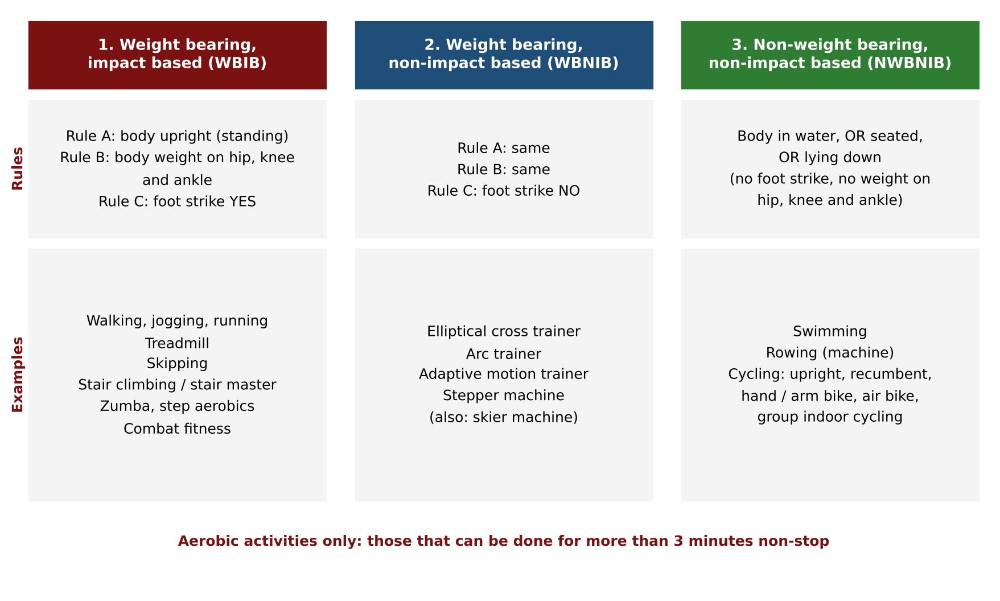
4.2 Category 1: Weight bearing, impact based (WBIB)
An activity must meet all three rules to qualify.
| Rule | Condition |
|---|---|
| A | The body is upright (a standing position) |
| B | Body weight comes on the key load-bearing joints: hip, knee and ankle |
| C | There is a foot strike: the foot makes contact with the surface and leaves it, again and again (on, off, on, off) |
Rules A and B make the activity weight bearing (WB). Rule C makes it impact based (IB). They are not looked at separately: all three must be met for the activity to be WBIB.
Examples (as discussed and written on the board):
- Walking, jogging, running (the same family, only the pace and intensity differ).
- Skipping.
- Stair climbing or stair master (the machine). Each time one step is left for the next, a foot strike happens.
- Zumba and step aerobics (hopping on and off a step board gives a foot strike).
- Combat fitness (a military-inspired drill).
- Treadmill.
Points raised in class:
- Jumping jacks, burpees, high knees and high jumps were suggested, but they are not purely aerobic. They contain an anaerobic element, and jumping jacks are done on repetitions, not on time. Activities for this topic must be possible for more than 3 minutes non-stop. Skipping (rope) is aerobic and qualifies: body upright, weight on hip, knee and ankle, with a foot strike.
- Treadmill. It may sound like common sense, but people get confused thinking the foot strike happens on a conveyor belt. The platform does not matter (a road, a beach, a park or a treadmill). Foot strike is foot strike: the foot leaves the surface and makes contact again, the body weight is on hip, knee and ankle, and the body is upright. So the treadmill belongs here.
- HYROX does not come here because it is not purely aerobic (it involves sled push and squats, so there is an anaerobic element).
- Combat fitness was first written with a question mark. It appears in the WBIB list on the board and on the slide.
Slide: the WBIB pictograph shows an upright body with red marks at the load-bearing joints and the caption "Body is upright; foot strike". The slide lists walking, jogging, running, treadmill running, stair climbing, skipping, dance and step aerobics, zumba fitness and combat fitness.
Beyond joint stress. The same classification can be used with a client's personality type. A client who is an introvert and does not like training in a group (solo, by themselves) can be given solo activities from this list. An extrovert thrives in a lively group environment and would get bored easily with solo activities, and would enjoy the group-type activities (zumba, dance aerobics, step aerobics, combat fitness) more.
4.3 Category 2: Weight bearing, non-impact based (WBNIB)
| Rule | Condition |
|---|---|
| A | Same as category 1: body upright |
| B | Same as category 1: body weight on hip, knee and ankle |
| C | No foot strike |
Rules A and B (copied from category 1) make it weight bearing. Rule C is the one that changes: because it is non-impact based, there is no foot strike. The feet are fixed on the platform or pedal, and the platform or pedal moves. The foot does not leave and make contact again and again.
Examples (all are machines):
- Elliptical cross trainer (also called the cross trainer). Two pedals carry the feet, which stay "glued" to them while the pedals move. The name elliptical comes from the oval path of the pedals (see below).
- Arc trainer. The pedals follow an arc shaped path, hence the name.
- Adaptive motion trainer. Some gyms call it "all in one", "four in one" or "five in one". It has different modes that change the pathway of the levers and pedals, so the movement can feel like elliptical, jogging, mountain climbing or running. It adapts to different motion styles, hence the name.
- Stepper machine. Two pedals move up and down, giving the feeling of stepping up and down. This is not the same as step aerobics (where the person goes up and down a step board with foot strikes). On the stepper the foot stays on the pedal: body upright, weight on hip, knee and ankle, but no foot strike.
Why "elliptical"? (revision link to joint types.) The wrist is a condyloid joint, and another word for condyloid is ellipsoid, which means oval shaped. In a ball and socket joint the socket is perfectly round, so the ball fits perfectly. In a condyloid joint the socket is oval. The pedals of the cross trainer move in this oval pattern, so the word elliptical came from ellipsoid.
Skier machine (shown later in the lecture from a rower brand). It mimics skiing on snow. When the video was paused and the class was asked for the category, the class correctly said weight bearing, non-impact based: there was no foot strike, the body was upright, and the body weight was on hip, knee and ankle.
4.4 Category 3: Non-weight bearing, non-impact based (NWBNIB)
This category has low stress on the joints. These two words make the difference from the first two: the activity is neither impact based nor weight bearing. All the activities that did not find a place in the first two categories get their place here.
The only rule: the body is in water, or seated, or lying down. The other two rules are not applicable (no foot strike, and no weight coming on the hip, knee and ankle).
Examples:
- Swimming (the body is in water).
- Rowing (rowing machine; the body is seated).
- Cycling. Cycling falls here by default because the body is made to be seated, even if some people deliberately keep the body upright. Ankle movement may happen, but there is no foot strike and no body weight on the load-bearing joints.
Types of bikes
| Bike | Description and use |
|---|---|
| Upright bike | The regular stationary bike most common in gyms. The seat is V-shaped. |
| Recumbent bike | Lower in height than the upright bike. Pedalling is towards the front. It has a back rest, arm support handles and a wide cushioned seat. |
| Hand (arm) bike / hand cycle | Pedalled with the arms and hands. |
| Air bike | Has a big fan instead of a front wheel and works on wind resistance technology. |
| Group indoor cycling | Indoor cycling classes, often called spinning classes in the industry. |
Why the recumbent bike was invented and who it helps:
- People with neurological disorders such as vertigo (and epilepsy, as the slide adds) feel dizzy and less confident at the height of an upright bike. The low seat gives greater stability and confidence for people with balance problems.
- The back rest gives lumbar support for people with lower back stress.
- Some people find the V-shaped seat of the upright bike uncomfortable in the groin area. The wide cushioned seat of the recumbent bike takes away the groin discomfort.
Hand (arm) bike: ideal for people with leg disabilities such as polio, or medical conditions such as severe arthritis in the knees. Pedalling uses the upper limbs. The upper limbs contribute less to cardiorespiratory endurance than the legs, because the legs have bigger muscles, bones and load-bearing joints. But as the saying goes, something is better than nothing.
Air bike: in an upright or recumbent bike the resistance is changed with a knob or buttons. In the air bike the resistance adjusts automatically with effort: the more effort applied, the harder it feels, and the less effort, the easier. When the fan rotates, wind passes through it, and this wind resistance sets how hard or easy it feels. Because the handles also move along with the pedalling, the air bike is cross training in a way. Rowing also recruits the upper and lower body, so it also counts as cross training.
Rowing machine. A well-known brand makes rowing machines. A video showed the movement (the slides show the start and finish positions). The video also showed the rower wearing a chest strap, which is a heart rate monitor. Heart rate monitoring and the devices available are covered in Cardio Regulations 2.
Group classes and solo activities. Cycling can be done in a group (indoor cycling or spinning) or alone, which links back to client personality.
4.5 The rules never change
Whenever, 10 years from now, a new innovative cardio machine is launched, the three rules still apply. It will be possible to tell which category any new machine belongs to using the same rules.

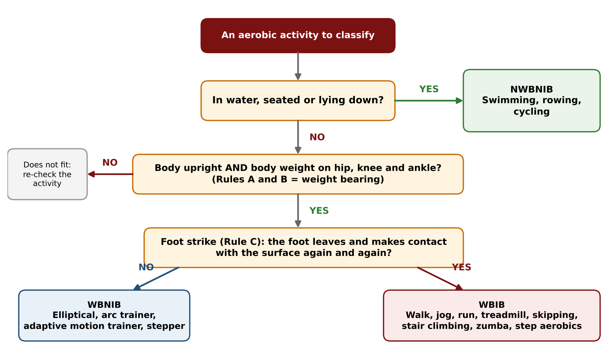
4.6 Summary table (from the slides)
| WBIB | WBNIB | NWBNIB |
|---|---|---|
| Walking | Elliptical cross trainer | Swimming |
| Jogging | Arc trainer | Cycling |
| Running | Stepper | Rowing |
| Skipping | Adaptive motion trainer | |
| Stair climbing | ||
| Dance and step aerobics | ||
| Zumba fitness | ||
| Combat fitness |
The slide summary does not list the treadmill separately (it appears as "Treadmill running" among the example photos). The board lists it separately.
Part 5: Blood Circulation Revision
This was a quick revision (a "walk-along block diagram") of the circulatory system, with questions to the class. Last time the cardiovascular system was taught in full detail, step by step. Here it is a smart shortcut revision.

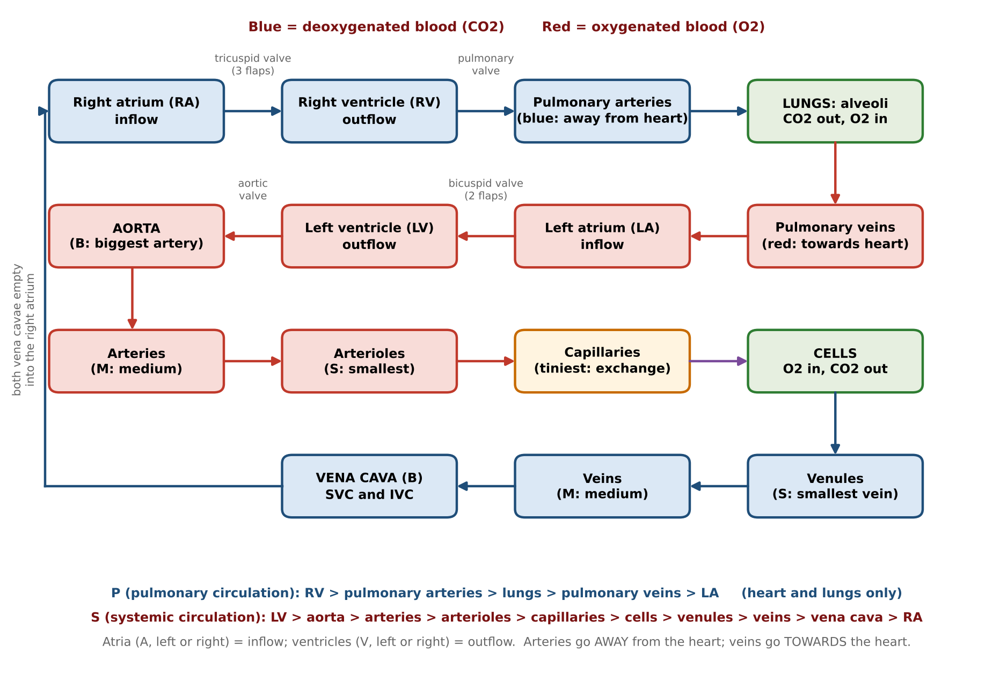
5.1 Set-up of the diagram
- A box for the lungs (labelled with the alveoli).
- A box for the heart, with four chambers: two upper (atria, the A comes on top) and two lower (ventricles).
- A box for the cells of the body.
- When labelling left and right on the diagram, the sides are written the opposite way, because the heart is viewed in the anatomical position. The right chambers are written on the left of the drawing and the left chambers on the right.
Rules to remember (written on the board):
- Atrium (A), left or right = inflow of blood.
- Ventricle (V), left or right = outflow of blood.
- Arteries go away from the heart.
- Veins come towards the heart.
Red in the diagram means oxygenated blood (oxygen in the blood). Blue means deoxygenated blood (carrying carbon dioxide).
5.2 The walk-along: oxygenated blood from the lungs to the cells
- The lungs send oxygenated blood through the pulmonary veins into the left atrium (LA) (inflow is always at an atrium).
- From the LA the blood goes to the left ventricle (LV). It crosses a valve with two flaps, the bicuspid valve (bi means two).
- From the LV the blood goes to the aorta, the biggest member of the artery family (B). The valve at this end of the LV is also named after it: the aortic valve.
- The aorta passes the blood to the arteries, the medium sized members (M). The vessels reduce in size along the way.
- The arteries lead to the arterioles, the smallest members of the artery family (S).
- From the arterioles the blood enters the capillaries, the tiniest blood vessels. Capillaries are the end point of contact: they deal directly with the cells, wrapping around and surrounding them, and this is where exchange happens.
5.3 Exchange at the cells
The capillaries deliver oxygen to the cells. The cells use the oxygen for their functioning, and in return the cells give carbon dioxide (the "return gift", as the lecture put it, in the way one returns a gift after receiving a festival gift of oxygen).
The same capillaries, which were red, now carry deoxygenated blood (CO2) and are drawn blue.
5.4 Deoxygenated blood back to the heart and lungs
The order of sizes is the same (big, medium, small), but the sequence of flow is reversed. For oxygenated blood the flow is big to medium to small. For deoxygenated blood it is small to medium to big.
From the capillaries the blood goes to the venules, the smallest members of the vein family (S).
Then to the veins, medium sized (M).
Then to the vena cava, the biggest member of the vein family (B). It splits into two: the superior vena cava (SVC) and the inferior vena cava (IVC).
- The SVC carries deoxygenated blood from the parts of the body located superior (above) the heart.
- The IVC collects deoxygenated blood from the parts located inferior (below) the heart. More of the body lies below the heart, so the IVC is made a little thicker because it carries blood from more areas.
Both enter the right atrium (RA) (inflow again).
From the RA the blood goes to the right ventricle (RV), crossing a valve with three flaps, the tricuspid valve.
From the RV the blood crosses another valve, the pulmonary valve, and enters the pulmonary arteries, which take the deoxygenated blood back to the lungs.
In the lungs the alveoli (tiny air sacs; singular alveolus) are where gaseous exchange takes place: carbon dioxide leaves the blood and oxygen is added. Inside the lungs there are also arterioles, venules and capillaries (a pulmonary venule, then a capillary surrounding the alveoli). Then the cycle goes on and on.
Trick for the word "pulmonary". Whenever the lungs are directly involved in a step, the word pulmonary appears: pulmonary valve, pulmonary arteries, pulmonary veins.
The two exceptions.
- The pulmonary arteries carry blood away from the heart (so they are arteries) but it is blue (deoxygenated). They are the only arteries carrying blue blood.
- The pulmonary veins carry blood towards the heart (so they are veins) but it is red (oxygenated). They are the only veins carrying red blood.
Job of a valve: to make sure there is no backflow of blood. It is a one-way traffic, not a return.
5.5 Pulmonary and systemic circulation
The slides show two subtypes of circulation. They are two names given to the two cycles within the one mega cycle.
| Pulmonary circulation (P) | Systemic circulation (S) | |
|---|---|---|
| Between | The heart and the lungs | The heart and the cells (the bigger cycle) |
| What happens | The heart sends deoxygenated blood to the lungs, and the lungs send oxygenated blood back, for oxygenation of the blood | Oxygenated blood goes from the heart to the cells, and deoxygenated blood returns |
| Name | P because the lungs are directly involved (pulmonary) | S from "system": cells combine to make tissues, tissues make organs, organs make systems, hence systemic |
Slide note. The slides show the same flow as a block diagram (cells, capillaries, arterioles, arteries, aorta, LV, LA, lungs, RV, RA, vena cava, veins, venules) with the valves labelled between chambers.
E-book note (Chapter IV). The E-book gives the same pathway: the right atrium receives deoxygenated blood from the vena cavae and sends it through the tricuspid valve to the right ventricle, which ejects it to the lungs through the pulmonary artery. Freshly oxygenated blood enters the left atrium through the pulmonary veins, flows through the bicuspid valve into the left ventricle, which pushes it into the aorta.
Part 6: Key Terminologies (Quiz Revision)
These terms were taught in the anatomy and physiology lectures on the cardiovascular and respiratory systems. The lecture listed them on the board and revised each through questions to students. They are used in the next lecture.
| # | Term |
|---|---|
| 1 | Heart rate (HR) |
| 2 | Resting heart rate (RHR) |
| 3 | Maximum heart rate (MHR) |
| 4 | Heart rate reserve (HRR) |
| 5 | Stroke volume (SV) |
| 6 | Cardiac output (Q) |
| 7 | Acute response to cardio |
| 8 | Chronic adaptations (cardiovascular system and respiratory system) |
| 9A | VO2 rest |
| 9B | VO2 max |
6.1 Heart rate (HR)
The number of times the heart beats in a minute.
6.2 Resting heart rate (RHR)
The number of times the heart beats in a minute when in a resting state.
What is a resting state? Imagine getting up in the morning. No physical effort is made by you. Only involuntary metabolic functions are taking place: the heart is beating, the brain is functioning, the liver, kidneys and other organs are working involuntarily just to keep you alive. Body temperature and glucose levels are being maintained, and the digestive system is working.
- Normal range of RHR: 60 to 80 bpm (lower limit 60, upper limit 80, written as bpm, beats per minute).
- Average RHR: 72 bpm.
Student question and correction. One answer said "60 average". The lecture pointed out that 60 to 80 is the range, and the average is a different number, 72 bpm.
6.3 Maximum heart rate (MHR)
The maximum number of times the heart can beat in a minute. It is estimated with the formula MHR = 220 minus age.
6.4 Heart rate reserve (HRR)
HRR = MHR minus RHR. The slide shows it as the span between the resting heart rate (bottom) and the maximum heart rate (top).
The right time to study HRR in detail is Cardio Regulations 2. There is a much more logical explanation behind this formula, which is explained there.
6.5 Stroke volume (SV)
The amount of blood pumped by the left ventricle in one beat.
- The spray bottle example: one push on the pump (one stroke) sends out an amount of liquid. That amount is the stroke volume. For the heart, the "bottle" is the left ventricle, and the blood that comes out in one beat is the SV.
- Average resting stroke volume: 70 ml of blood per beat.
- Be careful with the unit of time in exam questions. Options may say per beat, per second or per minute. Stroke volume is per beat (the left ventricle is named because from the LV the blood goes towards the cells).
6.6 Cardiac output (Q)
The amount of blood pumped by the left ventricle in one minute.
Q = SV x HR. This is not a special formula, it is logic: SV gives the blood per beat, HR gives the number of beats per minute, and multiplying them gives the blood per minute.
At rest (using the average values):
- SV = 70 ml per beat, HR (resting) = 72 bpm.
- Q rest = 70 x 72 = 5,040 ml, which is close to 5,000 ml or about 5 litres per minute.
- It is the value for rest because the 72 is the resting heart rate: the body is doing nothing, only involuntary functions.
6.7 Acute response to cardio
The acute response is the immediate effect, what happens when you do cardio.
- Heart rate increases.
- Cardiac output increases. A student answered that Q rest stays the same, but it cannot, because there is now physical effort. The resting cardiac output of about 5 L is speeded up 5 times, so 5 x 5 = 25 litres per minute (the board wrote "Q rest x 5 = 25 L per minute").
The slide gives the same idea (the resting Q of about 5 L is sped up in circulation 5 times) and adds that the sportsman's cardiac output is 30 to 32 L during maximal exercise (see Points to Confirm).

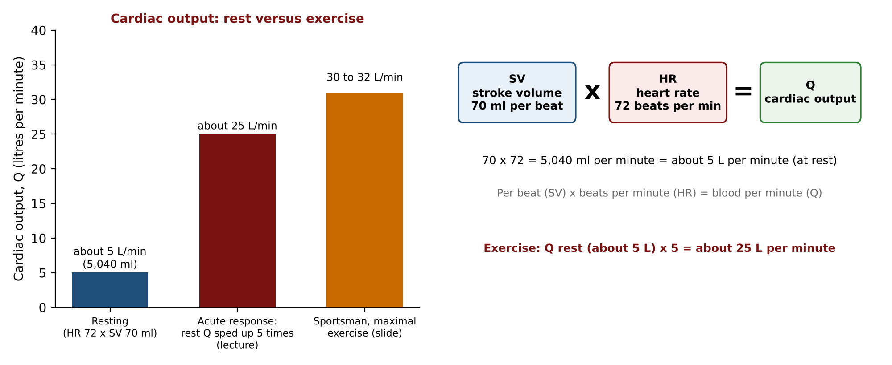
6.8 Chronic adaptations
Chronic means long-term, and adaptations mean benefits. Chronic adaptations are the long-term benefits of doing cardio, discussed for the cardiovascular system and for the respiratory system. They are covered in Part 8.
6.9 VO2 rest (9A)
What is VO2? The V stands for volume (the actual volume of oxygen, not the ventricle). O2 is the symbol of oxygen. VO2 is the volume of oxygen consumed by the body to produce energy (ATP). In aerobic activity ATP is formed in the presence of oxygen, as the mitochondria use oxygen to produce energy.
VO2 rest is the same thing measured at rest: the volume of oxygen the body uses just to keep alive (the involuntary functions at rest also need energy and therefore some oxygen).
- It is not the same for everyone. It depends on body weight.
- VO2 rest = 3.5 ml of oxygen per kg of body weight per minute. (Written on the board as 1 kg needs 3.5 ml of O2, in a minute, at rest only.)
- This value is also called 1 MET.
Worked example. A person weighing 80 kg needs 3.5 x 80 = 280 ml of oxygen per minute at rest, just to stay alive.
MET stands for metabolic equivalent of task. It can be thought of as an energy currency: one has to spend this much "MET" to buy oxygen. The slide describes it as a physiological measure expressing the energy cost of physical activities. At rest it is 1 MET, the bare minimum to stay alive. As the activity increases (jogging, running) the MET number increases to 3, 4 and so on, and for someone sprinting it can be 9 or 10 (these values were given as illustrations in the lecture).
6.10 VO2 max (9B)
VO2 max was understood with the help of a graph.
- The y axis is heart rate and the x axis is volume of oxygen (VO2).
- As you go up, heart rate increases. As you go right, the volume of oxygen consumed increases.
- Consider an incremental activity. A brisk walk (W): heart rate is low and the oxygen need is low, so the point is at the lower end of both. Increase the pace to a jog (J): heart rate and oxygen consumption both rise. Go to a run (R): both rise higher. Finally a person maxing out, going very close to their MHR, in a sprint (S): the volume of oxygen consumed to produce energy at this maximum level is called VO2 max.
- VO2 max is also referred to as the aerobic capacity of a person, their maximum aerobic capacity.
- How VO2 max is measured and tested is learned in the fitness testing lectures, where an actual test conducted worldwide is used to assess a person's cardiorespiratory fitness.

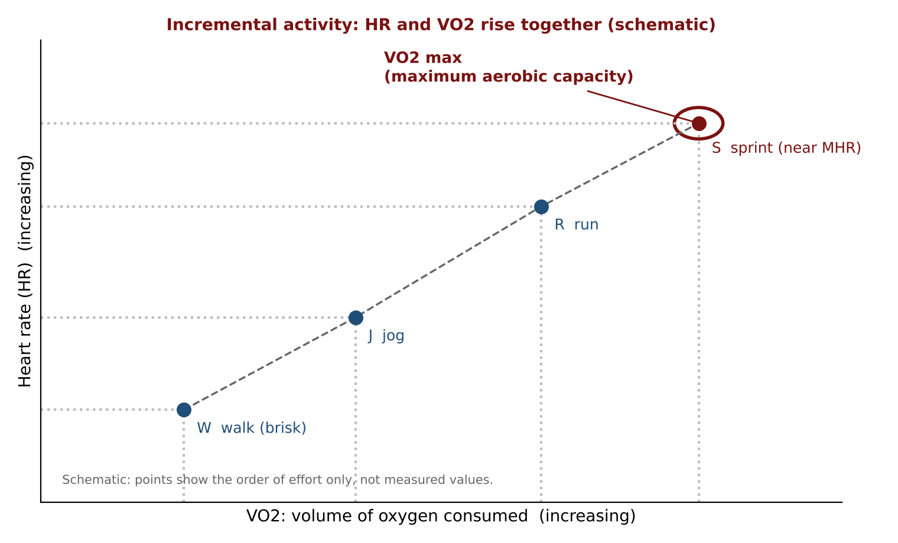
The slide defines VO2 max as the maximal oxygen uptake or consumption during incremental exercise or physical activity, and shows a graph of oxygen consumption against exercise intensity that rises and then levels off at VO2 max.
Part 7: Workload in Cardio
7.1 Revisiting workload
Workload was first discussed (before the first unit test, in the introduction to workload lecture) in the context of weight training.
- Workload is the amount of work done.
- In weight training, four factors tell the amount of work done: range of motion, poundage (weight), speed and number of reps (time under tension).
- In cardio, three factors tell the amount of work done: distance covered, speed and time taken.
| Weight training | Cardio |
|---|---|
| Range of motion | Distance |
| Poundage | Speed |
| Speed | Time |
| Number of reps |
(The slide lists the factors of workload in cardio as time, distance and speed.)
7.2 Each factor on its own
To increase someone's workload, it is enough to change one of the factors.
| Factor | Example from the lecture |
|---|---|
| Distance | A person who jogs 2 km is told to do 2.5 km. The workload increases through distance. |
| Speed | A person who jogs on a treadmill at 7 km per hour is told to go at 7.5 km per hour. The workload increases through speed. |
| Time | A person used to 10 minutes of cycling is told to add 10 minutes of running plus 10 minutes of swimming. The time rises, and by adding different activities, aerobic cross training is used at the same time. The workload could have been increased by simply adding 10 more minutes of cycling. |
Overall, time can be increased by lengthening the same activity or by adding different activities.
7.3 The three factors together: a case study
The factors are related. A hypothetical case shows how they work together to manage a client's workload.
- Goal: do not change the distance. The client covers 2 km (D = 2 km).
- Old: the client took 15 minutes (T old = 15 min).
- New: the client must cover the same distance in 12 minutes (T new = 12 min).
The workload has increased, because the same distance now has to be covered in less time. To do this the client must use the third factor, speed, and increase it (decreasing the speed would make the 2 km take more than 15 minutes).
The relationship is the basic speed, distance and time formula: Speed = Distance / Time (S = D/T). Its unit, km per hour, itself shows distance divided by time.
Converting minutes to hours. The unit of speed uses hours, so minutes must be divided by 60.
| Time | In hours | Speed = 2 / hours | |
|---|---|---|---|
| Old | 15 min | 15/60 = 0.25 h | S old = 2 / 0.25 = 8 km/h |
| New | 12 min | 12/60 = 0.20 h | S new = 2 / 0.20 = 10 km/h |
All three factors (distance, time and speed) were used together in the same case: to cover the same distance in less time, the speed had to go up from 8 to 10 km per hour.

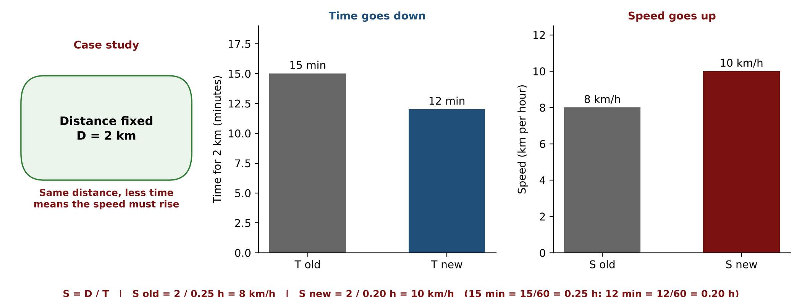
Calculators were recommended for the next lecture, which has a lot of calculation.
Part 8: Chronic Adaptations to Cardio
The slides list the chronic adaptations for the cardiovascular system and for the respiratory system.
8.1 Cardiovascular system
| Adaptation | Explanation |
|---|---|
| Better contractility of the myocardium | The myocardium is the muscle of the heart (myo = muscle, cardium = heart). Better contractility means better pumping of blood. The next two points follow from it. |
| Increased stroke volume (SV) | More blood pumped per beat |
| Increased exercise cardiac output (Q) | More blood pumped per minute |
| Decreased RHR | The normal range is 60 to 80. The lower the RHR, the better (towards 60 is considered good, towards 80 is not ideal). Cardio is how to lower it. Why a lower RHR is better is explained in Cardio Regulations 2, in the heart rate reserve topic. |
| Increased RBC count | RBC (red blood cells) are like a transport agent, carrying nutrients and oxygen with the blood. The more the count, the better the flow and the overall supply. The slide compares RBC count before and after endurance training. |
| Neocapillarization | More and newer capillaries are built (also met in the cross training benefit). |
| Increased elasticity of blood vessels | Elasticity is the ability of the vessels to regain their original shape as blood passes through. If vessel walls are stiff, the blood flow is not smooth. |
| Increased mitochondrial density | The mitochondria use oxygen to generate ATP in aerobic activity. More mitochondria per cell means more and better energy production. The slide shows capillaries and mitochondria before and after endurance training. |
| Increased resistance to fatigue | You tire at a later point. |
| Increased endurance | Stamina, the main benefit of cardio, the point where the lecture began. |
The lecture grouped the first points as related to quantity (more capillaries, more RBC, more mitochondria) and the last two as related to quality (tiring later, higher endurance).
8.2 Respiratory system
| Adaptation | Explanation |
|---|---|
| Respiratory muscles get stronger | Respiratory muscles such as the diaphragm and the intercostal muscles are involved in breathing. |
| Increase in lung volume and capacity to breathe air | A result of stronger respiratory muscles. |
| Improved blood flow to the lobes of the lungs | The lungs receive deoxygenated blood and send out oxygenated blood, and the movement of blood within the lobes of the lungs improves. |
| Improved utilisation of the alveoli | Having alveoli in good condition is one thing, and using them properly is another. With cardio, the alveoli work efficiently. |
| Increase in gaseous exchange | Carbon dioxide is taken away and oxygen is added to the blood better and better. |
| Improved recovery from exercise | After any type of exercise, recovery is faster. It takes less time to get back to normal. (The lecture described this as a quality-based benefit.) |
Part 9: Class Questions and Closing
Student question: Some trainers say cardio is not necessary and that only strength training should be done. Is it person to person, or what do you suggest?
Answer: People from a non-technical background should not be relied on for this. Since the first lecture it has been taught that all the components of fitness are interdependent. A person does not leave the heart and lungs at home when going for a strength training session: the heart and lungs play an important role on the strength training day too. Oxygenated blood is needed for weight training sessions. This is also why rest intervals between sets matter (taught earlier): the rest is partly for cardiorespiratory recovery. If the cardiorespiratory system were unimportant, there would be no need for that recovery.
In general, the heart and lungs must be trained to build the endurance needed for any form of activity or exercise. The non-technical view comes from the idea that weight training burns more calories, so fat-loss goals are met through weight training and cardio is unnecessary. That view forgets how overall performance and overall goals can be affected by ignoring this important component.
How much cardio to do is a different matter, and depends on the person's goal: only weight training or bodybuilding, an overall holistic approach, or something like training for a marathon, where training the heart and lungs becomes even more important and more cardio sessions are added. So the amount is person to person, but in general, cardio is important for everyone.
Student question: If a person does both on the same day, should cardio come first or strength training first?
Answer: This is a scheduling question. It will be answered in the Scheduling lectures.
What comes next. The next lecture (Cardio Regulations 2) starts with intensity, the way workload was learned at the end of this lecture. It also covers target heart rate, monitoring and training methods.
Points to Confirm
These are places where the recording was unclear or inconsistent, where the lecture differs from the slides or E-book, or where a value could not be checked. The lecture's version is kept in the text above.
- Cardiac output during exercise. The lecture says the resting Q of about 5 L is speeded up 5 times, giving 25 L per minute. The slide gives the sportsman's Q as 30 to 32 L during maximal exercise. These are different cases (an average person's acute response versus a sportsman at maximal effort), but the numbers are not the same, so confirm which to quote.
- Stroke volume and cardiac output: which ventricle. The lecture and slides say the left ventricle. The E-book (Chapter IV) says "each ventricle". The lecture's version (left ventricle) is used here.
- Resting heart rate values. The lecture and slide give a normal range of 60 to 80 bpm and an average of 72. The E-book gives 60 as good, 60 to 80 as normal, 40 as exceptionally good and 40 to 100 as the general range. The lecture and slide are followed.
- Benefits of cross training. The lecture gives three benefits (larger surface area of capillarization, avoiding overuse injuries, boosting interest). The E-book gives four: variety and less monotony, less risk of overuse injuries, recruiting more muscles, and more comprehensive muscular endurance. Capillarization is only in the lecture, and recruiting more muscles is only in the E-book.
- Cross training examples. The slide examples use 60 minute sessions (and 20 minute blocks), the E-book uses 20 minute blocks, and the lecture used hypothetical 10 minute blocks in a 30 minute session. All are examples of the idea. They are not fixed prescriptions.
- Combat fitness. It was written with a question mark during the lecture and the recording does not show the question being settled. It is in the WBIB list on the board and in the slides, so it is listed there.
- The "90 overs" figure. The lecture quoted a batsman practising the same shot for at least 90 overs a day (from an interview). This is a quoted figure that could not be verified.
- MET values. The lecture said MET rises to 3 or 4 for jogging and running and 9 or 10 for a sprint. These were illustrations and are not on the slides.
- Board value for oxygen per kg. On the board the handwriting for 3.5 ml looks like "38" in the zoomed photo. The slide and E-book both give 3.5 ml per kg per minute, which is used here (80 x 3.5 = 280 ml).
- Wording in the case study. While introducing the speed example (7 to 7.5 km per hour), the recording said "workload in terms of time". It is a speed example, so it is shown under speed.
- "Three main arteries". While tracing the flow the recording mentions that there are "three main arteries" and says only the order matters. These notes show aorta (B), arteries (M) and arterioles (S) as written on the board.
- The 3 minute rule and workload definitions. The rule that aerobic activities can be done for more than 3 minutes non-stop, and the earlier workload factors in weight training, come from earlier lectures. They were not checked in the Energy System or Workload chapters, only in the sources for this lecture.
- Slide content not discussed. The slide on the acute response also shows a chart of the percentage of blood flow to organs at rest versus during exercise. It was not discussed in the lecture and is not reproduced here. The E-book also gives VO2 max as cardiac output x oxygen extraction, which was not mentioned in the lecture.
- Slide wording for the recumbent bike. The slide gives the balance problems as "vertigo or epilepsy". The lecture mentioned vertigo and described it as a neurological condition, then read epilepsy from the slide.
Board Photos from the Lecture

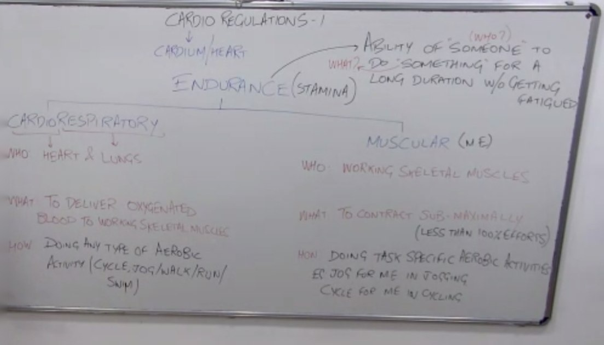

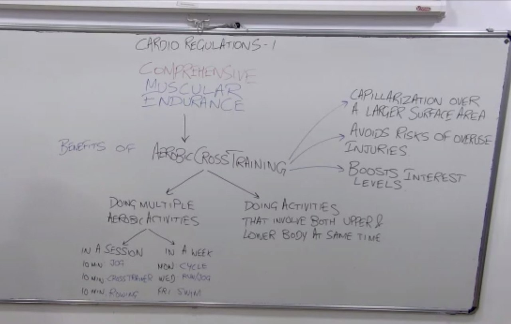

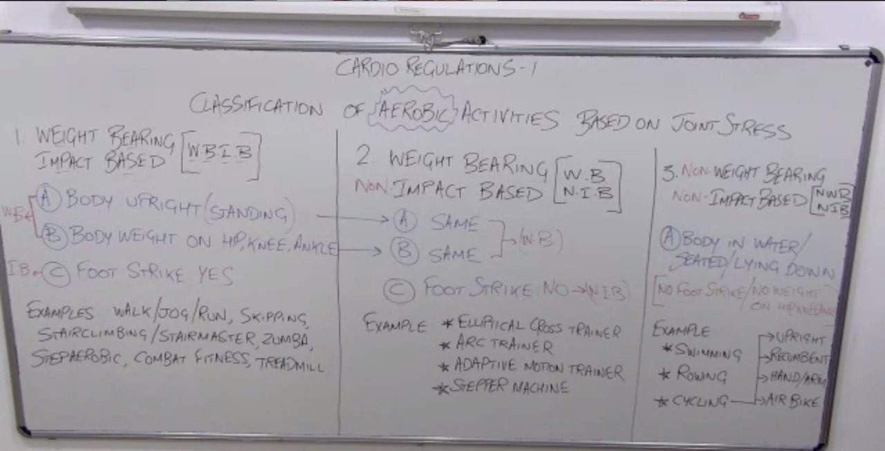

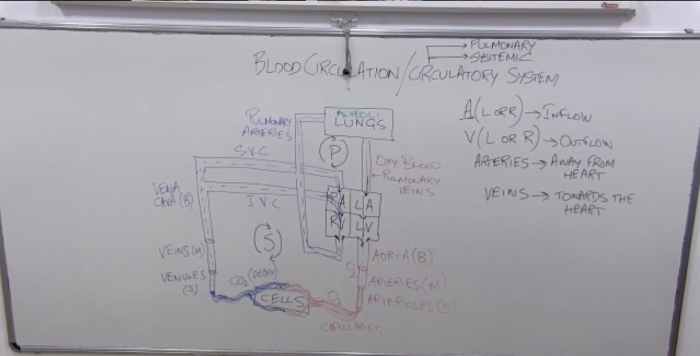

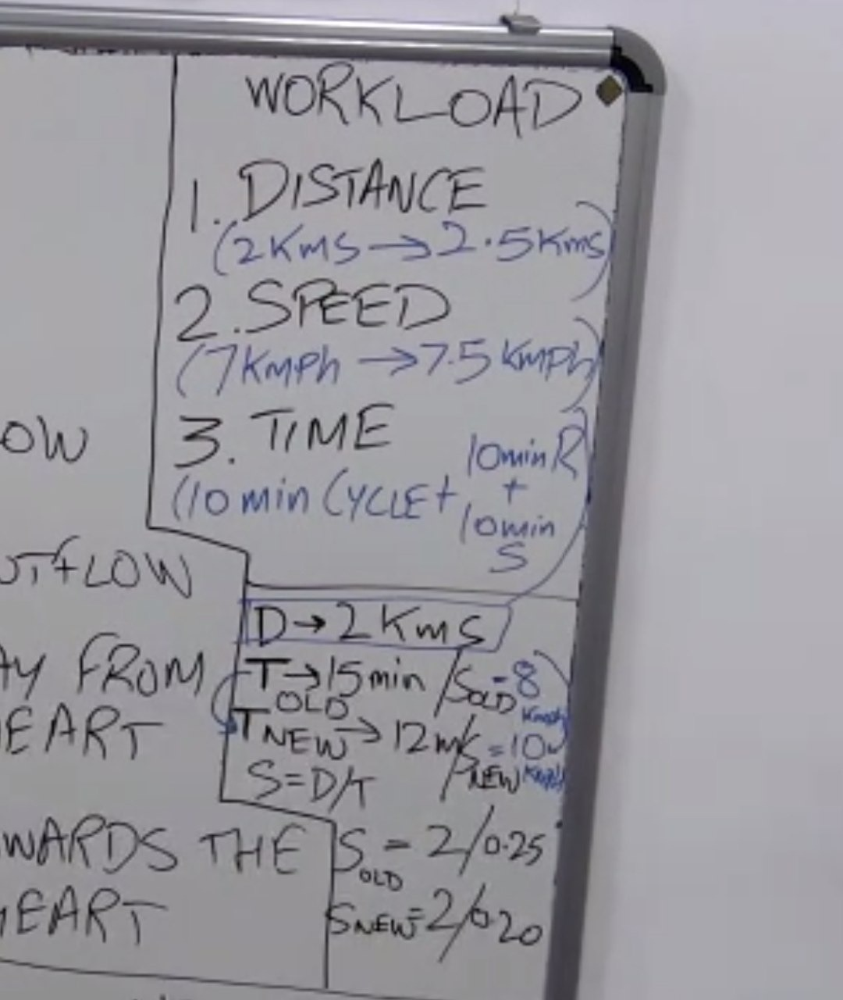

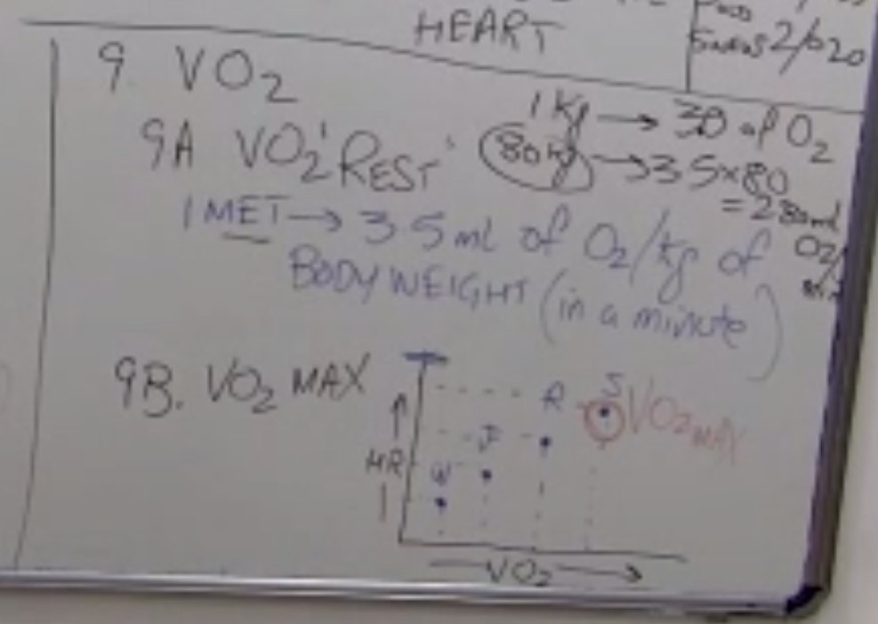

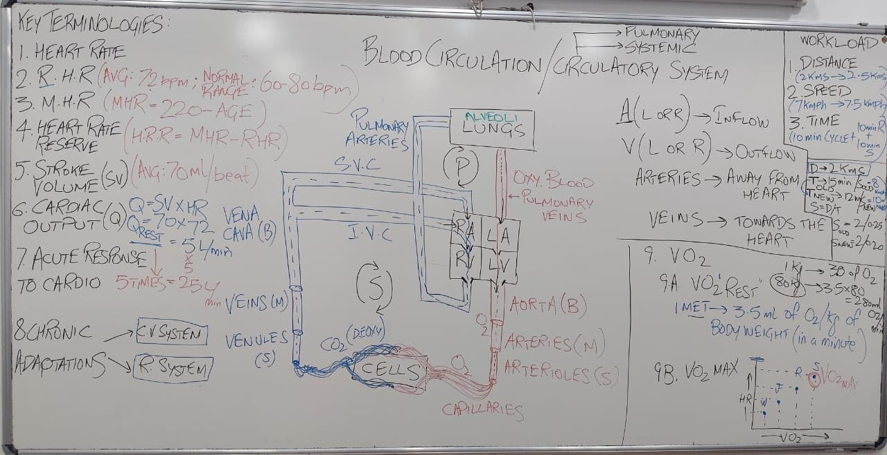